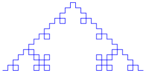

L-systems in J
Vector 26:1, page 109
Introduction¶
There are not many examples of repeated squaring [1], but I stumbled upon a new one in 2006, solving a problem posed by Bron [2]. To explain it I use some examples and some theory, but then a new method is introduced in J. The term L-system in the title is short for Lindenmayer system [3] [4].
Rabbit sequence¶
This is an infinite sequence [5] of booleans which has the property that if one changes each 0 to a 1 and every 1 to the pair 1 0 , the sequence does not change.
Notice that this is the Algae example [6] in [3].
Lindenmayer systems¶
An L-system is a parallel rewriting system, i.e. consisting of an alphabet V of symbols which can be replaced, a set of (production) rules P such that each rule replaces a particular symbol of V in a string of symbols (from V), and an initial symbol S to which the rules subsequently are applied.
All rules are applied at the same time, therefore the system is parallel.
In fact P is a mapping from V → V*, the set of all strings with symbols from V, including the empty string. If for some a ∈ V one has P(a)=s, with s some string, this is also denoted by a → s.
If for a symbol c in V one has P(c) = c, then c is called a constant.
If a symbol in V is not a constant, then it is called a variable.
In the example of the rabbit sequence, V is the set of booleans {0,1}.
The rules are P(0) = 1 and P(1)= 1 0 and the initial symbol S is 0.
L-systems in J¶
To apply J [7] in producing an L-system, I prefer the alphabet V to be a set of integers, say {0,1,…,n-1}, such that(mostly) S is represented by 0.
Then the mapping P can be represented by an array of boxes, all of which contain an array of integers form V. The production rules are then P(k) = ;k{P.
So for the rabbit sequence we get V =: 0 1, S =: 0 and P =: 1; 1 0 .
Now the verb to produce the next generations of S is easy to construct:
But after that we get a problem:
This can easily be repaired by the following verb:
And now we can get a rabbit sequence of any length:
P ([:; {~)^:20 S
1 0 1 1 0 1 0 1 1 0 1 1 0 1 0 1 1 0 1 0 1 1 0 1 1 0 1 0 1 1 0 1 1 0 1 0 1
1 0 1 0 1 1 0 1 1 0 1 0 1 1 0 1 0 1 1 0 1 1 0 1 0 1 1 0 1 1 0 1 0 1 1 0 1
0 1 1 0 1 1 0 1 0 1 1 0 1 1 0 1 0 1 1 0 1 0 1 1 0 1 1 0 1 0 1 1 0 1 0 1 1
0 1 1 0 1 0 1 1 0 1 1 0 1 0 1 1 0 …
Which can be given a bit more sophisticated by P ([:; {~)^:(]`(S"_)) 20
Notice that if the production rules all have the same length, no boxing is needed, in which case the ; in the expression is replaced by a , .
More examples¶
Some examples from [3] are Cantor dust [7] and Koch curve [8].
The first is given in J by V =: 0 1, S =: 0 and P=: 0 1 0; 1 1 1 so
Where 0 represents black and 1 represents white.
The Koch curve [8] is given by
and
P ([:; {~)^:(]`(S"_)) 3
0 1 0 2 0 2 0 1 0 1 0 1 0 2 0 2 0 1 0 2 0 1 0 2 0 2 0 1 0 2 0 1 0 2 0 2 0
1 0 1 0 1 0 2 0 2 0 1 0 1 0 1 0 2 0 2 0 1 0 1 0 1 0 2 0 2 0 1 0 2 0 1 0 2
0 2 0 1 0 2 0 1 0 2 0 2 0 1 0 1 0 1 0 2 0 2 0 1 0 2 0 1 0 2 0 2 0 1 0 1 0
1 0 2 0 2 0 1 0 2 0 1 0 2 0 2 0 1 …
With the graph below.

Given these examples, anybody can make her own.
Repeated squaring¶
Now the question (with which I perhaps whetted your appetite) in the introduction is still open, what about repeated squaring?
If you look at the verb P ([:; {~)^:(]`(S"_)) it is obvious the behaviour is rather linear. In each iteration a string is used to apply P on the individual symbols of the string and the results are concatenated.
Now consider Pk which is the mapping applied k times (on S which is 0). It is easy to construct in J by (;@:{&.> <)^:(k-1)~ P .
If we apply this to the rabbit sequence (V =: 0 1, S =: 0,P =: 1; 1 0 ) we get
(;@:{&.> <)^:(<4)~ P
+---------+---------------+
|1 |1 0 |
+---------+---------------+
|1 0 |1 0 1 |
+---------+---------------+
|1 0 1 |1 0 1 1 0 |
+---------+---------------+
|1 0 1 1 0|1 0 1 1 0 1 0 1|
+---------+---------------+
As soon as (some of) these Pk are known, repeated squaring can start:
binind=: I.@|.@#: NB. The binary indices are determined
appl=: (;@:{&.> <) NB. Applying the main verb
rs=: 4 : '> {. appl/ appl^:(binind y) x' NB. x equals P and y is the generation giving the complete solution
The figures show that the performance is what you would expect, much better, while the output is the same:
ts'P ([:; {~)^:(]`(S"_))35'
0.50670696 1.6777933e8
ts'P rs 35'
0.022058907 79695232
(rs-:P ([:; {~)^:(]`(S"_))]) 35
1
In this example we can do even better, since for the rabbit sequence we have Pk+1 = Pk , Pk-1 , indeed Fibonacci!
So this gives a solution which is about 40 times as fast and 3.5 times as lean as the original one.
Final example, Gray codes¶
The last I owe the reader was the solution I found for the problem of Bron [2]. He asked for the most efficient verb to generate the Gray code, see [9] and [10]. Fortunately he also allowed to generate the decimal values of that code, which for the first 64 numbers look like:
G=: 0 1 3 2 6 7 5 4 12 13 15 14 10 11 9 8 24 25 27 26 30 31 29 28 20 21 23
22 18 19 17 16 48 49 51 50 54 55 53 52 60 61 63 62 58 59 57 56 40 41 43 42
46 47 45 44 36 37 39 38 34 35 33 32 .
The fractal structure of the code becomes apparent if you do
2-~/\ G
1 2 _1 4 1 _2 _1 8 1 2 _1 _4 1 _2 _1 16 1 2 _1 4 1 _2 _1 _8 1 2 _1 _4 1 _2
_1 32 1 2 _1 4 1 _2 _1 8 1 2 _1 _4 1 _2 _1 _16 1 2 _1 4 1 _2 _1 _8 1 2 _1
_4 1 _2 _1 .
To not let grow the numbers too quickly, I transformed it in
G1=: (** 2^. 2* |) 2-~/\ 64{.G
1 2 _1 3 1 _2 _1 4 1 2 _1 _3 1 _2 _1 5 1 2 _1 3 1 _2 _1 _4 1 2 _1 _3 1 _2
_1 6 1 2 _1 3 1 _2 _1 4 1 2 _1 _3 1 _2 _1 _5 1 2 _1 3 1 _2 _1 _4 1 2 _1
_3 1 _2 _1 .
By the way, this representation of the (binary reflected) Gray code has a very useful interpretation: each number gives by its absolute value the coordinate where two consecutive code words differ, and by its sign how they differ: + if 0→1 and – if 1→0.
So I defined V to be the set of integers and S=:1 . But most important was P. To produce G1, I defined
Notice that in fact P is infinite, which is indicated by the (…).
Notice also that (P{~ –n) -: |.- n{ P for n > 0, so in general we have P=:3 :'1; (, [:|. -@|.&.>) 1 2 _1; ;/3+ i.y'n for some n, like
[P=:3 :'1; (, [:|. -@|.&.>) 1 2 _1; ;/3+ i.y'6
+-+------+-+-+-+-+-+-+--+--+--+--+--+--+-------+
|1|1 2 _1|3|4|5|6|7|8|_8|_7|_6|_5|_4|_3|1 _2 _1|
+-+------+-+-+-+-+-+-+--+--+--+--+--+--+-------+
The only thing one has to do is to transform this resulting fractal in the Gray code again, ie to invert (** 2^. 2* |) and precede it by 0 :
+/\0,(** 2%~ 2^|) P rs 6
0 1 3 2 6 7 5 4 12 13 15 14 10 11 9 8 24 25 27 26 30 31 29 28 20 21 23 22
18 19 17 16 48 49 51 50 54 55 53 52 60 61 63 62 58 59 57 56 40 41 43 42
46 47 45 44 36 37 39 38 34 35 33 32
which is equal to the original G. This, in principle, gives the impressive performance results in [2].
Conclusions¶
Using L-systems in J is a powerful technique for generating all kinds of fractal like structures. In a next paper I will describe how to transform these arrays in nice graphs using the plot facility of J.
Bibliography¶
- RepeatedSquaring.
[Online]. http://www.jsoftware.com/jwiki/Essays/Repeated%20Squaring. - Bron. [Online]. http://www.jsoftware.com/jwiki/Puzzles/Gray%20Code.
- Lindenmayer1. [Online]. http://en.wikipedia.org/wiki/L-system.
- Lindenmayer2. [Online]. http://mathworld.wolfram.com/LindenmayerSystem.html.
- RabbitSequence.
[Online]. http://www.maths.surrey.ac.uk/hosted-sites/R.Knott/Fibonacci/fibrab.html. - Algae. [Online]. http://en.wikipedia.org/wiki/L-system#Example_1:_Algae.
- CantorDust. [Online]. http://en.wikipedia.org/wiki/L-system#Example_3:_Cantor_dust.
- KochCurve. [Online]. http://en.wikipedia.org/wiki/L-system#Example_4:_Koch_curve.
- GrayCode1. [Online]. http://en.wikipedia.org/wiki/Gray_code.
- GrayCode2. [Online]. http://www.jsoftware.com/jwiki/Essays/Gray%20Code.